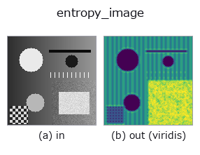

texture op• Data kinds: image → image
• Call: fullseye.apply(img, "entropy_image", a=0.5, b=0.5) (2-D model = एक image + दो scalar knobs a,b∈[0,1])
• HALCON समकक्ष: entropy_image (अर्थ और parameters समझने के लिए HALCON reference उपयोगी है)

*Figure synthetic 128×128 input पर सच में चलाकर मिला output है। बाईं ओर input, दाईं ओर output। Point clouds ऊपर से देखे गए scatter के रूप में (brightness = z), 1-D series line के रूप में, volumes z दिशा में maximum-intensity projection के रूप में, videos बीच के frame के रूप में, complex images amplitude के रूप में, और जो return values चित्र नहीं बन सकते वे स्वयं values के रूप में दिखाए जाते हैं।*
*Output viridis जैसे pseudo-colour में है (गहरा बैंगनी = कम, पीला = अधिक), ताकि distance, phase, orientation, depth जैसे "मात्राओं के field" पढ़े जा सकें।*
Knob a को बदलकर (0.1 / 0.5 / 0.9, दूसरा knob default पर):
▸ entropy_image: knob a को बदलने का figure (docs site)
*Knob b output नहीं बदलता (मापा गया: 0.1 / 0.5 / 0.9 पर एक जैसा)।*
दूसरी images पर भी (synthetic scene / photo / coins। ऊपर की row में inputs, नीचे की row में उनके outputs। Knobs default पर):
▸ entropy_image: दूसरी images पर output (docs site)
*चौथा column colour (H,W,3) input है। यह op channels को पार किए बिना colour संभालता है (colour channel को तीसरे spatial axis की तरह convolve नहीं करता)।*
वृत्ताकार window के अंदर grayscale Shannon entropy (skimage.filters.rank. entropy, 8bit quantisation) को normalise की गई image। Window के अंदर tones के "बिखराव" को मापने वाला texture संकेतक, जो एकसमान regions में कम और मिले-जुले tones वाले regions में ज़्यादा होता है। HALCON के entropy_image (Calculate the entropy of gray values within a rectangular window.) के समकक्ष है (HALCON आयताकार window लेता है, यहाँ वृत्ताकार window वाला सन्निकटन)।
> नीचे का विस्तृत विवरण मूल text में है — सारांश और headings का अनुवाद हो चुका है।
a が窓の半径を 1〜4 の範囲(_rad(a))で振る。b は未使用。skimage が無い環境ではこの分岐は呼べない。
Knobs (मापा गया): a चरणों में असर करता है, और बदलाव a ≈ 0.33、0.67、0.99 पर होता है (मापा गया; 0.02 के step वाले sweep से मापी गई स्थिति)।
खाली frame (मापा गया): एक समान brightness वाली image देने पर brightness चाहे जो हो, परिणाम खाली होता है (सभी pixels background 0)। पूरी सफ़ेद हो या पूरी काली, एक जैसा व्यवहार होता है; केवल brightness से कुछ detect नहीं होता।
• gallery2d_texture_freq family guide
• Sample data catalog (DL URL / license) — 2-D के लिए skimage.data (BSD/public) + synthetic, 3-D के लिए real data sources (Stanford/PDS आदि) के DL URL।
• Operators का स्रोत और संदर्भ — इस op family के मूल research/methods के स्रोत।
• Algorithm का मानक स्रोत (लेखक, वर्ष) और उपयोग ऊपर की family usage guide में दिए गए हैं।
नीचे का program सच में चलता है, यह जाँचा गया है (figure वाला ही input)। Studio की help में यह block buttons बन जाता है, जिनसे इसे वहीं load करके चलाया जा सकता है।
entropy_image 0.50 0.50
▸ यह pipeline load करें · Load करके चलाएँ
• gallery2d_texture_freq — py -3.11 examples/gallery2d_texture_freq.py
image को input के रूप में लेते हैं)identity · gaussian · mean_box · bilateral · unsharp · median · min_filter · max_filter
texture)std_filter · local_bimodality · local_std · scale_select_std · bootstrap_std_error · structure_tensor_orientation · structure_tensor_coherence · gabor
*Provenance: ops.py — 2D operator registry. यह per-op note tools/opdocs.py md से अपने-आप generate होता है (हाथ से edit न करें)।*
© 2026 Kazufumi Furuse — Fullseye operator documentation. Licensed under Apache-2.0.